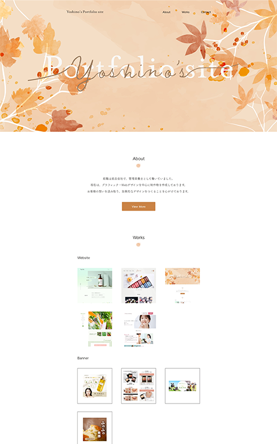
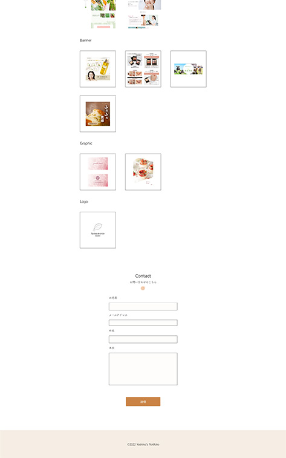

Website
ポートフォリオサイト

概要
転職活動で使う、ポートフォリオサイトのデザインカンプ作成、コーディングを行いました。
要件定義
目的：
・自分自身のことを伝えるため。
・制作物を載せることでWebデザインのスキルを伝えるため。
ターゲット：企業の採用担当者
制作期間
約3週間
使用ツール
Photoshop / Illustrator / XD / HTML / CSS / jQuery
制作
2022年
工夫した点
・自分自身を伝えるサイトなので、自分が生まれた誕生月である10月に焦点を当て、秋をテーマにしたデザインにしました。FVは見ただけで秋と分かるようなデザインにし、カラーはオレンジをメインカラーとしました。
・「Works」は、載せる制作物の数が12個と少なかったので、全ての制作物を一覧にして、一目で分かるようにし、クリックするとその制作物の詳細に飛べるようにしました。


Other Works